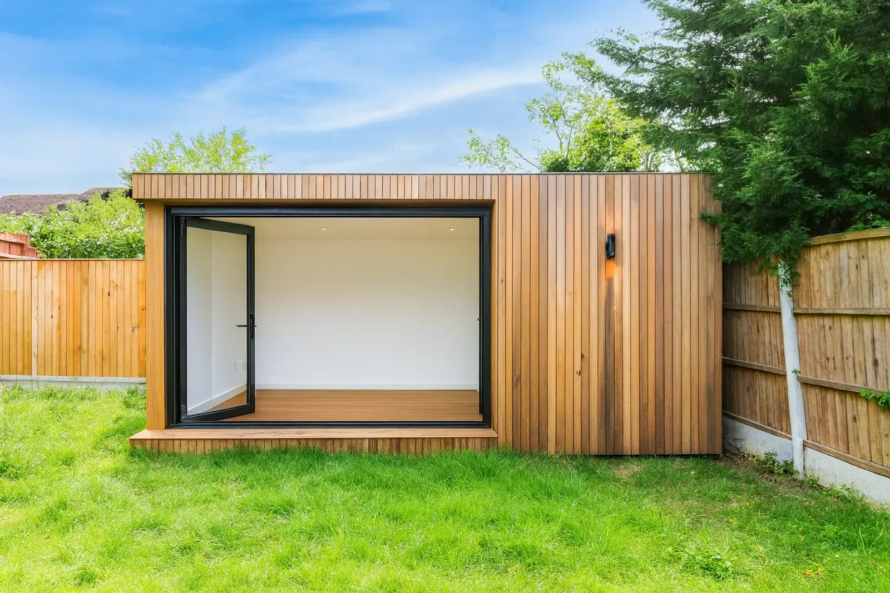

A garden room is the rare home project where the rules are genuinely on your side — most are built without a planning application at all. The catch is that almost every guide you will read online is written for England, and on outbuildings Wales has its own limits. One of them will decide where your building can sit before you have chosen a single window.
On this page The 2m rule · Height by roof · How much garden · Conservation areas · Building regulations · Sleeping in it · Electrics · Check your address
The Welsh rule that decides where it goes
Here it is, straight from the Welsh Government's guidance on outbuildings: any part of the development within 2 metres of the house cannot exceed 1.5 metres in height.
Read that twice, because it is not a rule England has. A garden room 1.5m tall is a kennel. What the rule really means in practice is simple: keep the building at least 2 metres away from the house and the normal height limits apply instead. Tuck it up against the back wall to save garden and you have just designed something that needs planning permission.
Height: the roof you choose sets the ceiling
Once you are clear of the house, the maximum height depends on what is on top. A dual-pitched roof buys you the most; a flat roof, which is what most contemporary garden rooms use, buys you the least. Eaves are capped at 2.5m whichever roof you pick.
How much of the garden you are allowed to cover
Two limits work together here. Outbuildings cannot cover more than 50% of the land around the original house — and “original” means as the house was first built, so an extension someone added in 1998 counts against you, not for you. And nothing can go forward of the principal elevation, which for most houses means not in the front garden.
There is a third that only bites on corner plots and long frontages: the building has to sit either as far back from the highway as the house does, or at least 5 metres back, whichever is closer.
If you are in a conservation area
Penarth town centre, Pontypridd town centre, chunks of Cardiff and sixteen conservation areas across Caerphilly county all sit in this bracket, so it is worth checking your address rather than assuming. On designated land the extra condition is about distance: outbuildings more than 20 metres from any wall of the house are limited to 10m² in total, and nothing is permitted between the side elevation of the house and the boundary.
A long garden in a conservation area is exactly where this bites. Twenty metres sounds a long way until you pace out a Victorian rear garden — and a 10m² cap is a shed, not a garden office. If that is your situation, the answer is usually to bring the building closer to the house, not to shrink it.
Building regulations: the 15 and 30 square metre lines
Planning permission and building regulations are separate approvals, and a garden room can easily need neither, one, or both. The Welsh Government's guidance draws the lines by floor area:
The bit that changes everything: sleeping in it
The moment a garden room contains sleeping accommodation it is a different building in the eyes of both regimes. Building regulations apply regardless of floor area — insulation, fire safety, structure, ventilation, the lot. And if it is going to function as somewhere independent to live rather than as a room that belongs to your house, that is a change of use and needs planning permission in its own right.
None of that makes an annexe a bad idea. It makes it a project rather than a delivery, and it wants deciding at the sketch stage rather than after the base is down. If a bed is anywhere in your plans — even “just for guests at Christmas” — say so at the first conversation.
Power, light and the certificate you should end up with
A garden room without power is a shed. The supply to it is buried armoured cable from the consumer unit in the house, and the Welsh Government's guidance is clear that alterations to circuits outdoors are notifiable under the building regulations, along with kitchens and bathrooms.
In practice that means one of two routes: an electrician registered with a competent person scheme does the work and issues you a building regulations compliance certificate within 30 days, or the work is notified to local authority building control and inspected. Ask which route your installer is using, because the certificate matters — it is the piece of paper a buyer's solicitor asks for years later.
How to check your own address in ten minutes
Before anyone quotes you, four checks settle almost every case, and you can do all of them from the kitchen table:
- Is the property listed, or in a conservation area? Your council's planning map will tell you. Listed means an application whatever you build; a conservation area brings in the 20m and 10m² conditions above.
- Has the house already been extended? The 50% figure is measured against the original house, so a previous extension has already spent some of the allowance.
- Pace out 2 metres from the back wall, and 2 metres in from the boundary. What is left is where a full-height building can go. If that leaves nothing usable, the design needs to change, not the tape measure.
- Decide the floor area against 15m² before you fall for a layout — the difference between 14 and 16 square metres is the difference between no building control involvement and some.
If it all comes out inside the limits and you want that in writing — worth having when you sell, because a buyer's solicitor may ask — you can apply to the council for a lawful development certificate. It is not permission; it is proof you did not need any.
How we design around all of this
In practice the rules push every good design in the same direction, and they are easy to work with once you know them:
- Set the building at least 2m off the house, which the 1.5m rule effectively requires anyway, and use the gap as a covered path or planting rather than losing it.
- Choose the roof against the height you actually want inside — a dual pitch buys 4m, a flat roof 2.5m.
- Keep 1m clear of every boundary where the size is heading past 15m², which also makes it far easier to build and maintain.
- Check the address for conservation area status before the design, not after.
- Where it genuinely needs an application, say so early — plenty are approved, but it is months rather than weeks.
Sources. Permitted development limits from the Welsh Government's “Planning permission: outbuildings” guidance; floor area thresholds from its “Building regulations: outbuildings” guidance; the notifiable electrical work position from its “Building regulations: electrics” guidance. This is a guide to the rules as they are published, not a substitute for checking your own address with your council — and if you want it in writing, a lawful development certificate does exactly that.